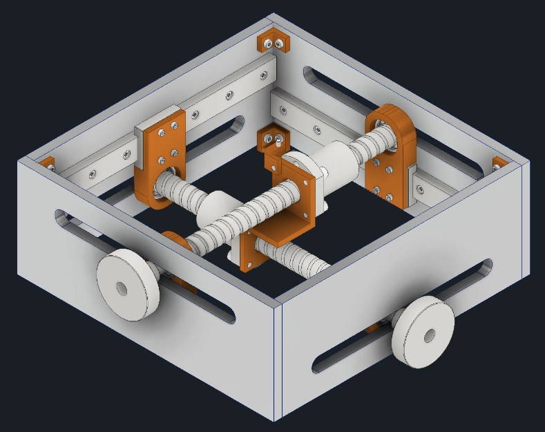

Caricamento del modello 3D…
Trascina i due volantini bianchi · trascina altrove per ruotare la vista
Gira il volantino col dito e guarda la slitta e le sfere.
Pagina di Ruben Zazzeri
Tutto il meccanismo, in un colpo d'occhio.
Si illumina nell'animazione qui sopra.
Con le sfere l'attrito è così basso che, se spingi la slitta, è la vite a girare. Una vite trapezia invece resta bloccata: è autobloccante. Prova con tutte e due.
p è il passo, cioè di quanto avanza la chiocciola a ogni giro della vite; L è la corsa. Nel dispositivo le due assi hanno la stessa corsa (Lx = Ly = 140 mm) e lo stesso passo, quindi per andare da un'estremità all'altra servono 14 giri di volantino su entrambe.
Scorri di lato →
Il meccanismo costruito per l'Open Day.

Il dispositivo è una tavola a due assi: due viti a ricircolo di sfere, messe a croce, muovono una chiocciola doppia in X e in Y. Ogni vite è montata su un carrello che scorre sulle guide della scatola, e i volantini passano nelle asole delle pareti. Sopra la chiocciola c'è un magnete che, attraverso il coperchio trasparente, guida una pallina nel labirinto.
Perché si mettono le sfere tra vite e madrevite?
Open Day · Scuola d'arti e mestieri Bellinzona
← Tutti i meccanismi